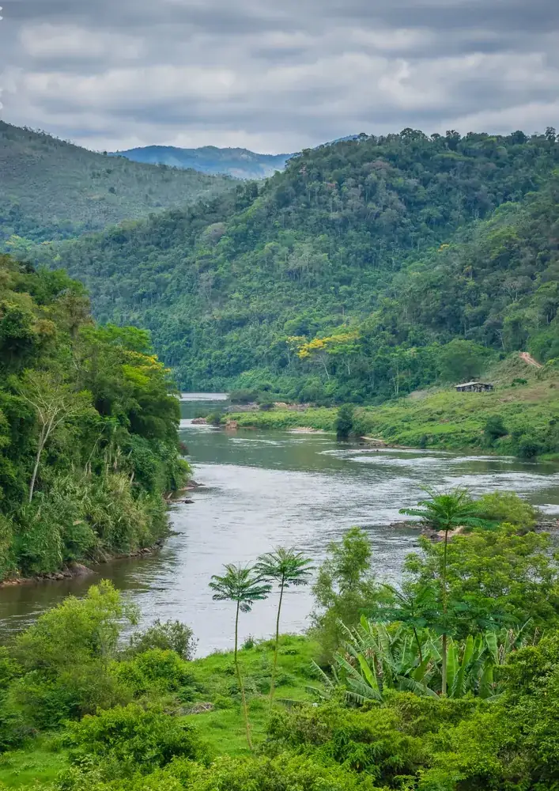

Data
Area: 2,344,858 km²
Population: Approximately 112 million
Capital: Kinshasa
Language: French
Currency: Congolese Franc (CDF)
Time Zone: UTC+1 and UTC+2
Calling Code: +243
Weather

Condition: Partly Cloudy
Temperature: 25 °C
Wind Speed: 10 km/h
Wind Chill: N/A